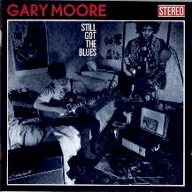
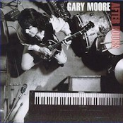
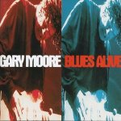
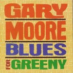

Блюзовая дискография Gary Moore
Автор Андрей Евдокимов.

STILL GOT THE BLUES 1991 Virgin
ВСЕ ЕЩЕ ГРУЩУ
(существует и в варианте Picture CD)
Переломный на блюз альбом в долгой дискографии
GM. На запись Moore пригласил старых соратников по
металлическим и фьюжин группам плюс Nicky Hopkins,
ветеран британского ритм-энд-блюза. Команда
составила довольно плотное сопровождение дл
гитары Мура, козырного туза в этой колоде. Но
плотность игры - не главное достоинство
блюзбэнда. Альбом являет в лучшем виде все
древние недостатки европейского блюза. А
недостает ему тонкости в ощущении ритма,
недостает того, что делает из ноты, вставленной в
пятилинеечную клетку классической музыки, живую
блюзовую ноту (blue note), довольно вольготно
чувствующую себя на нотном стане и
непривязываясь к определенной высоте. Hopkins
вытягивает этот экс-metal-бэнд из криминального в
блюзовом отношении уровня. Но общая игра
остается слишком прямолинейной. Если уж 4/4, то,
блин, их именно четыре и именно четверти. А как же
еще?
Поет GМ так же "в лоб" (что, собственно, и
обеспечивает хит-парадную проходимость его
блюзовых записей), однако гитара его делает его
альбомы вполне привлекательными даже дл
блюзовых пуристов. То, что он пришел с другого
поля, позволяет GМ вносить в довольно истрепанный
набор блюзовых гитарных клише - нечто новое,
вполне укадывающееся в рамки жанра, но звучащее
более свежо.
 На альбоме -
песни из Золотого Блюзового Набора: "Oh Pretty
Woman" (О, Красотка) Williams’a из репертуара A.King’a,
"Walking By Myself" (Гуляю сам по себе) J.Rodgers’a, "Too
Tired" (Слишком устал) Johnny Guitar Watson’a, "As The Years Go
Passing By" (С течением лет) D.Malone, "All Your Love" (Вс
твоя любовь) O.Rush’a... Из наследия своего кумира -
P.Green’a - GM выбрал в чикагском стиле написанную
"Stop Messing Around" (Хватить гулять). Более
по-флитвудмаковски звучит собственный муровский
"Midnight Blues" (Полуночный блюз). Но в целом, за
исключением ритмических нюансов, альбом ближе к
современному горячему техасскому стилю. Из 12
лишь 4 песни сочинены самим GM. За исключением
слюнявого заглавного трека, это вполне достойные
произведения, особенно горячий "Texas
Strut"(Техасская походка) и величественное
посвящение A.King’y "King Of The Blues" (Король блюза).
Оба обладают мелодией (нечастое качество в блюзе)
и украшены блистательным соло. (Хотя, пусть
приглашенное соло A.Collins’a в "Too Tired" и не
назовешь таким уж "блистающим", все равно
оно блюзовей стократ любых муровских изощрений).
Еще один дорогой гость - Albert King, запечатлевший
смачное соло из полуторадюжины (не больше) нот в
"Oh Pretty Woman". Битломаны покупают этот альбом
из-за участие G.Harrison’a в записи его песни "That Kind
Of Woman" (Этот тип женщины).
На альбоме -
песни из Золотого Блюзового Набора: "Oh Pretty
Woman" (О, Красотка) Williams’a из репертуара A.King’a,
"Walking By Myself" (Гуляю сам по себе) J.Rodgers’a, "Too
Tired" (Слишком устал) Johnny Guitar Watson’a, "As The Years Go
Passing By" (С течением лет) D.Malone, "All Your Love" (Вс
твоя любовь) O.Rush’a... Из наследия своего кумира -
P.Green’a - GM выбрал в чикагском стиле написанную
"Stop Messing Around" (Хватить гулять). Более
по-флитвудмаковски звучит собственный муровский
"Midnight Blues" (Полуночный блюз). Но в целом, за
исключением ритмических нюансов, альбом ближе к
современному горячему техасскому стилю. Из 12
лишь 4 песни сочинены самим GM. За исключением
слюнявого заглавного трека, это вполне достойные
произведения, особенно горячий "Texas
Strut"(Техасская походка) и величественное
посвящение A.King’y "King Of The Blues" (Король блюза).
Оба обладают мелодией (нечастое качество в блюзе)
и украшены блистательным соло. (Хотя, пусть
приглашенное соло A.Collins’a в "Too Tired" и не
назовешь таким уж "блистающим", все равно
оно блюзовей стократ любых муровских изощрений).
Еще один дорогой гость - Albert King, запечатлевший
смачное соло из полуторадюжины (не больше) нот в
"Oh Pretty Woman". Битломаны покупают этот альбом
из-за участие G.Harrison’a в записи его песни "That Kind
Of Woman" (Этот тип женщины).
Итог: рекомендуется для любителей
блюза младшего возраста.

AFTER HOURS 1992 Virgin
ПОЗДНИЕ ЧАСЫ
(Японское издание включает на один трек больше: All
Time Low.)
Продолжает Still Got The Blues по всем параметрам и по
той же схеме. Открывается таким же боевым, как
"Movin’ On" (Двигаюсь дальше), "Cold Day In Hell"
(Холодный день в аду). Так же боевито в высоком
темпе сыгран "Key To Love" (Ключ к любви) J.Mayall’a из
альбома Bluesbreakers 1966г. Из гостей здесь снова A.Collins, а
на "Since I Met You Baby" (С тех пор, как я теб
встретил, крошка) впервые с GM играет B.B. King (Этот
трек появляется на сборнике B.B. King’a "Lucille &
Friends"(Люсиль и друзья).
Вывод: то же, что и раньше.

BLUES ALIVE 1993 Virgin
ЖИВОЙ БЛЮЗ
(Японское издание вкючает еще и вторую
пластиночку с четырьмя треками: Stop Messin' Around / You Don't
Love Me / Since I Met You Baby (с участием B.B. King) / Key To Love.)
На мой
взгляд (т.е. в архисубъективной оценке) это самый
"живой" из “блюзов” GM. По-европейски
напористая гармоника F.Mead’a вовсе не
по-европейски непрямолинейна, а гитарные соло
самого Мура "живьем" звучат гораздо
раскованней и, значит, ближе к блюзу.
"Тяжелое" прошлое GM давлеет над несколькими
номерами, вроде того же Cold Day In Hell, есть и попытки
играть то, что металлюги называют
"балладами": это и Still Got..., и старая муровска
песня Parisienne Walkways (Парижские проулки), и хлипкая с
красивенькой мелодией и изысканной
импровизацией, неимеющей вовсе никакого
отношения к блюзу, "Separate Ways" (Разными путями).
Но это меньшая часть альбома. В остальном звучит
действительно блюз, пусть и с типичными
европейскими акцентами. Есть классика жанра, уже
знакомая в интерпретации GM по предыдущим двум
альбомам (хотя, еще раз повторюсь, на BLUES ALIVE эти
интерпретации действительно звучат живее, в
смысле, без кавычек.) Вновь на "Too Tired" гостит
A.Collins, правда, гитара его записана так, что звучит
"хлипче", чем хозяйский инструмент. Зато
действительно хорош - в стиле позднего
гриновского Флитвуд Мака и из его репертуара
выбранного - сомнамбулический блюз британского
харписта D.Bennet’a "Jumpin’ At Shadows" (Бросаюсь на
тени). И как всегда GM отлично играет в скоростном
темпе. Он заряжает зал высокой энергией, и это
заметно даже в записи. (Как очевидец выступлени
GM на джаз-фестивале в MONTREUX-95, имею заявить, что то,
что я видел, было на порядок менее энергитично и в
основном просто скучно. Хотя с другой стороны, к
примеру, Н.Арутюнов был в полном восторге от
концерта GM, который он видел где-то в Европе.
Вывод: я бы рекомендовал этот альбом
как лучший у GM на блюзовой тропе.

BLUES FOR GREENY Virgin 1995
БЛЮЗ ДЛЯ ЗЕЛЕНЕНЬКОГО
Альбом записан с самыми лучшими намерениями,
но, опять продчеркну, на мой взгляд - скучен. I Loved Another
Woman (Я любил другую) можно считать достаточно
состоятельной модернизацией аранжировки
классического флитвудмаковского варианта. С
другой стороны - я вряд ли могу быть здесь быть
объективен, даже очень расстаравшись. Мне эти
песни знакомы были прежде по лучшим записям Peter
Green’s Fleetwood Mac, и сравниваю я GM с теми своими
давними впечатлениями. И для меня этот альбом -
добротная работа. Я вполне разделяю уважение GM к
Питеру Грину. Но слушать эти песни буду в
авторском варианте, или, если уж захочетс
интерпретаций, в альбме RATTLESNAKE GUITAR - The MUSIC OF PETER GREEN.
Здесь подход к темам Грина отнюдь не школярский,
и главное - живой и разнообразный. Участники
(список неполный) этого двойного CD: бывшие Foghat, Savoy
Brown, сподвижник Питера Грина Snowy White, Rory Gallagher, Harvey
Mandel, Arthur Brown (да, тот самый), K.Hensley (экс Uriah Heep),
бывшие Yardbirds, Ian Anderson (Jethro Tull), Stu Hamm (виртуоз
бас-гитары), Zoot Money.
Вывод: разбирайтесь сами, если денег
не жалко.
DARK DAYS IN PARADISE Virgin 1997
Tracks: One Good Reason / Cold Wind Blows / I have Found My Love In You / One Fine Day /
Like Angles / What Are We Here For? / Always There For You / Afraid Of Tomorrow / Where
Did We Go Wrong? / Business As Usual
Альбом назначен к выпуску на середину мая 1997г. GM
играет с новой группой, все песни - его сочинения.
И, хотя точно пока ничего неизвестно, Пресс-релиз
Virgin обещает "новый поворот в творчестве" GM.
Вывод: А.Евдокимов - провидец, ему
открыто будущее (см. фразу "Период переворотов
у Мура - 6-8 лет." в статье).
Идти к GM в Интернете можно по адресам:
http://www.virginrecords.com/artists/VR.cgi?ARTIST_NAME=Gary_Moore
http://www.ratol.fi/~kpontis/Gary_Moore/
http://home.sn.no/~gaz/
http://www.bourgoin.holowww.com/GM/bio/intro.htm
Gary Moore